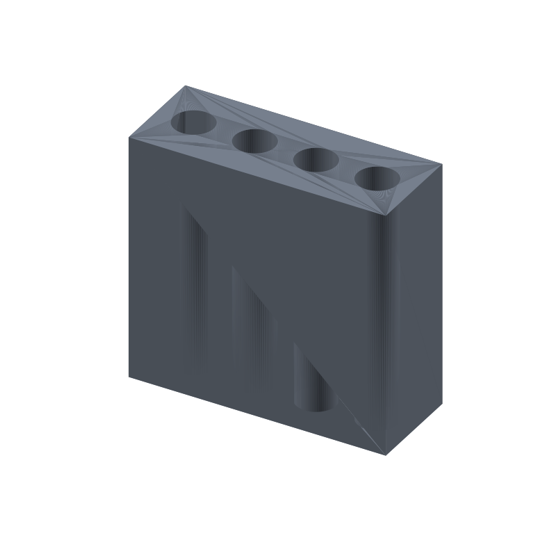

Toothbrush holder STL, four drain-through holes, 84 × 32 × 80 mm
Every toothbrush cup ends the same way: a shallow pool of rinse water at the bottom, four brushes standing bristle-down in it, and a film of gunk you scrub out weekly and it still comes back. This holder skips the cup. It is a solid block that stands four brushes upright by the sink, and the four 13 mm holes run the full 80 mm height: rinse water drains straight through onto the shelf and the brush heads dry in moving air instead of sitting in a puddle.
Manual brush handles, including the chunky kids sizes, pass through a 13 mm hole with room to lift out. Electric brush heads do not fit 13 mm, so check your handle first; if your household leans electric, the generator rebuilds the block at 16 mm in one rerun. The holes sit on a 20 mm pitch so four brushes stand without clacking, and the whole thing prints flat in the modeled orientation: the holes are vertical cylinders, every layer prints a closed ring wall to wall, no supports, no bridging.
This page carries the measured spec sheet: dimensions taken from the exported mesh, every edge counted, holes ray scanned from both directions, the volume cross checked against an analytic sum, and preview renders, so you can check the numbers before you slice.

The STL is one material and prints in one color; the renders shade the faces by light angle so the drain holes and the hole spacing read as geometry, not paint.
Spec sheet, measured from the mesh
| Spec | Value |
|---|---|
| As exported | One connected standing block 84 × 32 × 80 mm with four vertical drain holes through the full height |
| Drain holes | Four 13.0 mm design diameter (ray scan at 0.25 mm step measured 12.5 per hole; the analytic layout puts all four at exactly 13.0), running the full 80 mm height |
| Hole layout | Top-face openings at x 5.8 to 18.2, 25.8 to 38.2, 45.8 to 58.2 and 65.8 to 78.2; centers measured 12.0 / 32.0 / 52.0 / 72.0, max error 0.0 mm against the design layout |
| Pitch | 20.0 / 20.0 / 20.0 mm measured center to center (design 20 mm, exact) |
| Through check | A ray down each hole axis from above and up from below exits the mesh clean both ways, 4 of 4 through; no false bottom, rinse water drains straight through |
| Solid probes | 9 of 9 land inside the solid: 3 on the top face between holes, 4 near the side edges, 2 on the bottom rim (ray verified) |
| Volume | 172.58 cm³ mesh vs 172565.67 mm³ analytic, delta 0.009883%, ≈ 214 g PLA solid, less at typical infill |
| Flat in the modeled orientation, four vertical cylinder holes wall to wall, no supports, no bridges | |
| Mesh check | Watertight, winding consistent, euler -6, genus 4 (the four drain holes), one body, 2076 faces, 1032 vertices, all 3114 edges shared by exactly 2 faces (trimesh 5.1.0, 2026-09-10) |
| Files | STL (101 KB) and 3MF (22 KB) plus the parametric generator script gen_toothbrush31.py |
| Params | width 84, depth 32, height 80, hole_n 4 (3 to 5), hole_d 13 (12 to 16), pitch 20; hole centers derive from the layout with a 5 mm minimum end wall and a 4 mm minimum side wall |
| License | CC-BY 4.0 on MakerWorld; royalty free, no AI training, direct from us |
How the holder was verified
The generator extrudes an 84 × 32 mm rectangle the full 80 mm height, so the block is watertight by construction, then cuts the four drain holes with a manifold boolean. Each cylinder cutter has 128 segments and its caps sit 1 mm outside both faces of the block, so nothing shares a plane with the solid. The script asserts watertight, winding consistent, one body, and an euler number of exactly -6 before it writes anything: -6 is 2 minus twice the genus, and the genus 4 comes from the four through-holes. It also checks cross sections at z 1.5, 40 and 79: each shows 5 loops, the outline plus the four hole openings.
The shipped STL loads back with merged vertices as watertight, winding consistent, euler -6, genus 4, one body, is_volume true. The edge census counts 3114 edges and every one of them is shared by exactly 2 faces: zero non-manifold edges anywhere in the mesh.
The features were ray scanned on the reloaded mesh in 0.25 mm steps. A scan line across the mid-depth of the top face finds four openings, 12.5 mm wide at the step quantization (the analytic layout puts all four at exactly 13.0 mm), with hole centers at x 12.0, 32.0, 52.0 and 72.0, zero error against the design, and a measured pitch of 20.0, 20.0 and 20.0 mm. A ray down the axis of each hole from above and up from below passes clean through with zero intersections, 4 of 4 through: the holes really do pierce the block. Nine solid probes, between the holes on the top face, near the side edges and on the bottom rim, all land inside the solid.
The volume cross checks two ways. Trimesh measures 172.58 cm³ on the mesh. An independent sum from the layout, the 215,040 mm³ block minus four 13 mm full-height cylinders at 42,474.33 mm³, comes to 172,565.67 mm³ = 172.57 cm³. The two agree to 0.009883%, far inside the 1% gate.
Print notes
Print the file as exported, flat in the modeled orientation: the base is a solid 84 × 32 mm face on the plate and the four holes are vertical cylinders coaxial with the build direction, so every layer prints a closed ring. Nothing bridges, nothing floats, no supports, no brim beyond plate adhesion. 0.2 mm layers and three perimeters are a reasonable default; the walls between holes run 7 mm at the narrowest, so three perimeters leave a light infill pattern inside them.
I have not test-printed this yet. If you print it, tell me how the drain holes treat your sink shelf. The knobs are in the generator: width, depth, height, hole_n, hole_d and pitch.
Change any of those and rerun gen_toothbrush31.py: hole centers recompute from the layout and the script refuses to write an STL if the pitch leaves less than 6 mm between holes, if a hole leaves less than 5 mm of end wall, less than 4 mm of side wall, or if the reload fails the one body, watertight, euler -6 checks. Five holes at 16 mm for a family of electric brushes is a number change, not a redesign.
Honest limits
The holder is mesh verified but untested on a printer, and the brush fit is the modeled 13 mm hole, not a fit check against real handles. Electric brush heads are wider than 13 mm and will not fit; manual handles pass, and a tight handle that needs force seats after one 12.8 to 13 mm drill pass.
The hole width in the spec table reads 12.5 mm because the ray scan steps 0.25 mm; the analytic layout and the volume agreement put every hole at exactly 13.0 mm with centers to 0.0 mm error. The quantization is a measurement artifact, not a defect in the mesh.
PLA is fine on most sink shelves, but a wet bathroom wants something that shrugs off water and heat cycles: print the same generator output in PETG, or a colored matte filament that hides toothpaste splatter better than white.
Where to get the files
The toothbrush holder is staged on our MakerWorld account and goes public on our profile once it is submitted and clears review.
More printed organizers and bench tools, with a status table for the pool: 3D printed desk organizers and printable tools. The rebuild-everything approach, generator parameters per model side by side: parametric 3D printed tools.
Compare all 20 models by solid mesh volume in the STL volume ledger.
FAQ
Will my brush handle fit?
The holes are 13 mm across on a 20 mm pitch. Manual brush handles, including chunky kids sizes, pass through and lift out. Electric brush heads do not fit 13 mm; if your household leans electric, set hole_d to 16 in the generator and rerun before you print. When in doubt, measure the handle across at its widest point first.
Why do the holes go all the way through?
Drainage. The holes run the full 80 mm height, so rinse water runs straight through onto the shelf, nothing pools at the bottom, and the brush heads dry in moving air instead of standing in a puddle. The through-holes are also the whole topology: the euler count of -6 encodes exactly the four holes, so there is nothing else hiding inside the mesh.
Does it print without supports?
Yes. Printed in the modeled orientation, every surface is either flat on the plate or a vertical wall, and each drain hole is a vertical cylinder: every layer prints a closed ring, wall to wall, with no bridge anywhere. The euler count of -6 is the four holes and nothing else, so the slicer has no overhang to catch.